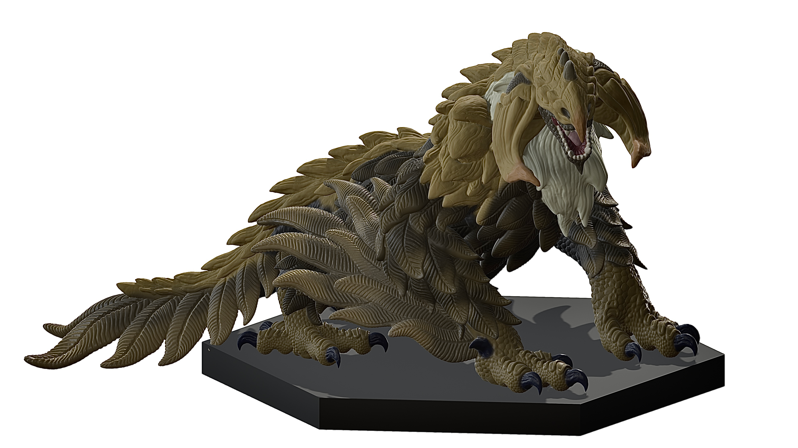
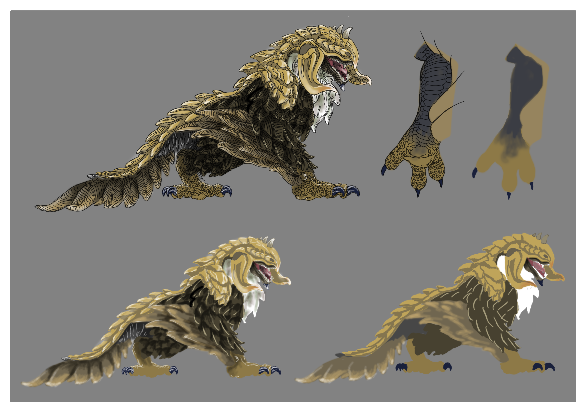

ー 基本情報 ー
・作品名：「 出立つ猛禽竜 」
・作者名：YOSHIKI
・制作年：２０２６年３月
・技法 / 素材 / 仕様：デジタル造形 / ABSライクレジン
・寸法（サイズ）：未定×未定×８３mm
ー 概要 ー
２０２５年度から制作を開始し、翌年３月にかけて制作。
猛禽類を爬虫類とのハイブリッド生物として新たにデザインしました。
竜という架空性がありながらも、外見や体色を含め、既存の鷲やトカゲを思わせるものとなっています。
視力が完全に退化しつつも、その土地に根付く強靭な生物として猛禽竜を新たな生物として描いています。
本造形工房フィギュアシリーズの最初の全身造形作品となります。
ぜひ、細部までご覧下さい。
ー 造形 ー
本作品は、猛禽類を爬虫類とのハイブリッド生物である猛禽竜という新たな生物として描いています。
初の全身造形作品ということもあり、全体的に探り探りで作業を進めました。
全身を覆う鷲のような羽の造形は、どのようにすれば立体物として成立する形状になるか・羽の質感が伝わるものになるかの2点をよく考え造形しました。
また、背面や頭部を覆う甲殻や脚の鱗のディテールは、細部までこだわりパターンを使用することなく全て一つ一つ手彫りで作業を行いました。
自然界に生息する生物として、機械的ではなくより自然的で生物らしさを追求することを重視していたため、パターンを敢えて使用せず、
鱗の一枚一枚や甲殻のひび割れ等を丁寧に造形していきました。
ー 造形からデザインへ ー
作品を制作するにあたり、まず基本的には造形するもののデザインを決定する必要があると思います。
しかし、私は敢えて造形からデザインを考えていく手法をとりました。
個人的に実際に造形で様々な形をラフにとり、そこから良いと感じたものをデザインとして詰めていくという
手法がやりやすく、また立体物としての映えるアングルや実際のイメージが想像しやすいと感じたためです。

上図はラフ造形から良い案を抜粋し、それを2D上でトレースし、ブラッシュアップしたデザイン画になります。
トレース時はもちろん、簡素な形状でしたがそれを元に足りない部分やあった方が良いものをトレース画に追記していき、
現在の正式なデザインへと至りました。また、この段階で彩色も決まりました。
没案として、閉塞感を全面に押し出したような暗い彩色のものもありましたが、生物としての馴染み深さや実在感といった点で
あまりにも現実離れしすぎているように見えると感じたため、図のような鷲のような彩色になりました。
戻る